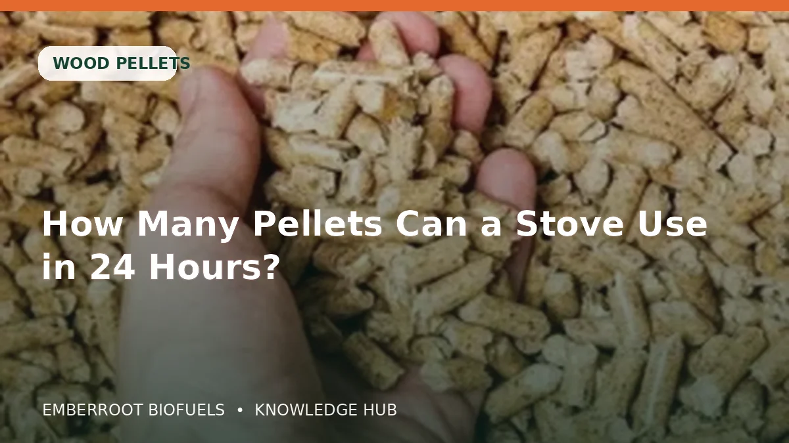
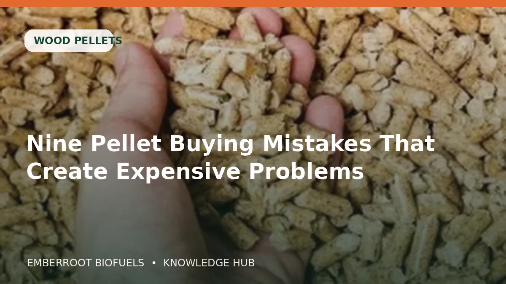

04JULWood pellets
How Many Pellets Can a Stove Use in 24 Hours?
A practical wood pellets guide covering the specification, performance, storage and buying checks behind “How Many Pellets Can a Stove Use in 24 Hours?”.
Read articlePractical, buyer-focused guidance on wood pellets, firewood, briquettes, wood by-products, storage, certification and bulk delivery.

04JULA practical wood pellets guide covering the specification, performance, storage and buying checks behind “How Many Pellets Can a Stove Use in 24 Hours?”.
Read article
30JUNA practical wood pellets guide covering the specification, performance, storage and buying checks behind “Nine Pellet Buying Mistakes That Create Expensive Problems”.
Read article 26JUN
26JUN
A practical wood pellets guide covering the specification, performance, storage and buying checks behind “What Are Wood Pellets Used For Beyond Home Heating?”.
Read article 22JUN
22JUN
A practical firewood guide covering the specification, performance, storage and buying checks behind “Best Firewood to Burn: Heat, Burn Time and Moisture”.
Read article 18JUN
18JUN
A practical firewood guide covering the specification, performance, storage and buying checks behind “Birch vs Ash vs Oak Firewood: A Home Heating Comparison”.
Read article 14JUN
14JUN
A practical firewood guide covering the specification, performance, storage and buying checks behind “Hardwood vs Softwood Firewood: Choosing for Your Appliance”.
Read article 10JUN
10JUN
A practical firewood guide covering the specification, performance, storage and buying checks behind “How to Store Firewood for a Cleaner, More Reliable Burn”.
Read article 06JUN
06JUN
A practical firewood guide covering the specification, performance, storage and buying checks behind “Kiln-Dried vs Seasoned Firewood: What Buyers Need to Know”.
Read articleNo matching articles found.